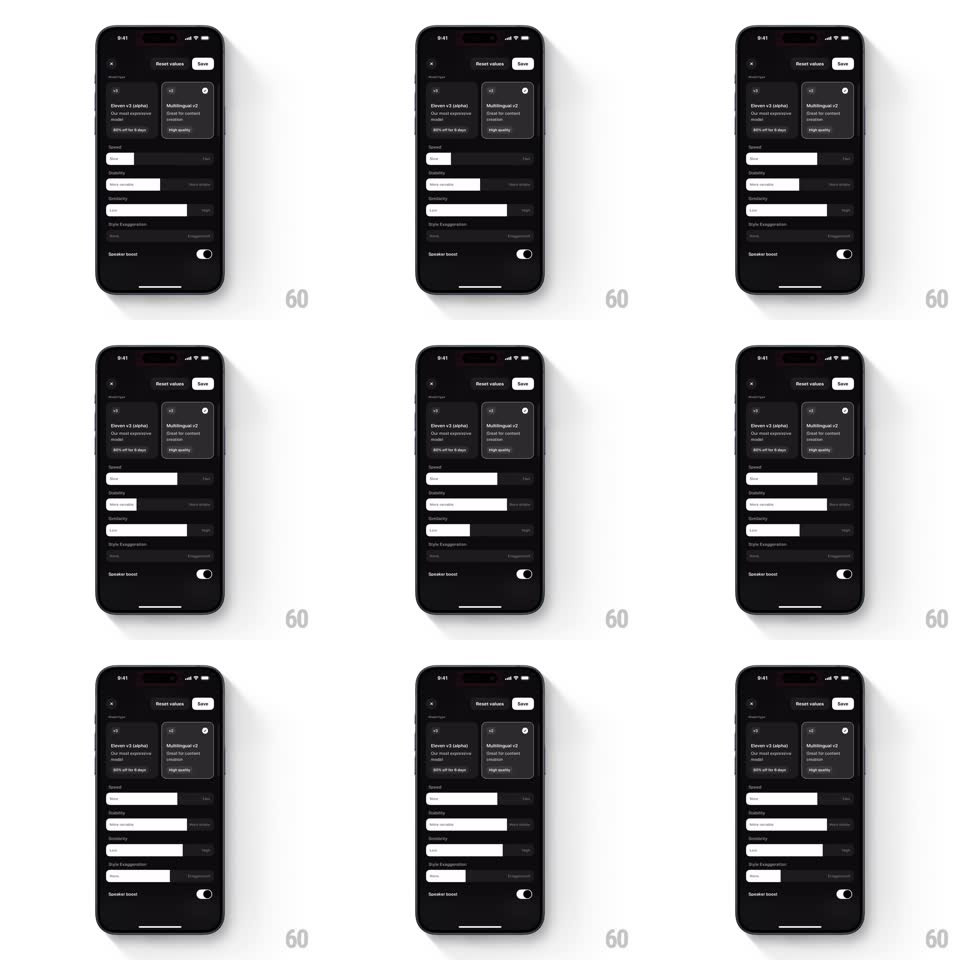

Media
Frame-by-frame

Rebuild this interaction 1:1: ElevenLabs' model settings sliders - in a dark settings sheet, dragging each parameter slider (Speed, Stability, Similarity, Style Exaggeration) moves the fill and value with a tight, responsive feel, and selecting a model card highlights it.

Rebuild this interaction 1:1: ElevenLabs' model settings sliders - in a dark settings sheet, dragging each parameter slider (Speed, Stability, Similarity, Style Exaggeration) moves the fill and value with a tight, responsive feel, and selecting a model card highlights it. ## Integration Integration: stack-agnostic spec - springs given as stiffness/damping, timed motions as duration + curve; map every value to your framework and animation library of choice. ## Scene A near-black settings sheet: two model cards up top (Eleven v3 alpha, Multilingual v2) with speaker icons and a selected-state ring, then a stack of labeled sliders (Speed, Stability, Similarity, Style Exaggeration), a Speaker boost toggle, and Reset values / Save actions. ## Motion spec Pattern: scrub slider with trailing value, gesture-driven. - Drag: the knob and track fill track the finger 1:1; the numeric value label at the row's trailing edge updates live. - Release: the fill eases the last few points into place (spring ~500/30, 200ms) - a subtle settle, no bounce. - Model select: tapping a card swaps the selected ring and check icon (200ms crossfade) with a small card lift (scale 1 -> 1.02, 150ms). - Toggle: Speaker boost slides its knob (200ms, ease-out) and tints the track on. - Save: the button briefly presses (scale 0.97, 100ms) on tap. ## Calibration - The slider never lags or overshoots the finger - responsiveness is the whole feel. - Value labels are tabular so digits do not jitter the row. ## Reduced motion No card lift; value and ring changes are instant. ## Don't miss - Dark-on-dark styling with the fill track reading clearly against the rail. - Reset values restores defaults with the same settle animation, not a jump.